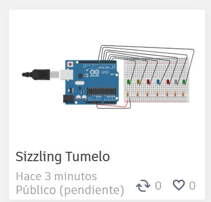

Tema: Arduino
TÍTULO DE LA PRÁCTICA
"Encender un led si la distancia es mayor a 100cm y encender un alarma si la distancia es menor a 100cm"
OBJETIVOS
Objetivo General:
Analizar el comportamiento de las compuertas lógicas básicas mediante su construcción y simulación.
Objetivos Específicos:
• Identificar las diferentes compuertas lógicas y sus símbolos.
• Construir circuitos lógicos básicos utilizando compuertas.
• Verificar las tablas de verdad mediante simulación y práctica.
MARCO TEÓRICO
(Explica brevemente cada compuerta. Puedes incluir un dibujo o tabla de verdad)
• Compuerta AND: Solo da salida alta cuando todas las entradas son altas.
• Compuerta OR: Da salida alta si al menos una entrada es alta.
• Compuerta NOT: Invierte la entrada.
(Puedes agregar aquí tablas de verdad y símbolos de cada una)


MATERIALES Y EQUIPO
• Fuente de alimentación
• Protoboard
• Cables de conexión
• LEDs
• Resistencias
• Chips lógicos (74LS08, 74LS32, 74LS04, etc.)
• Multímetro (opcional)
PROCEDIMIENTO
1. Conectar la compuerta lógica en el protoboard según el circuito.
2. Alimentar adecuadamente el chip.
3. Probar las diferentes combinaciones de entradas y observar la salida.
4. Registrar resultados.
5. (Opcional) Simular los mismos circuitos en software.
TABLA DE RESULTADOS
Entrada A Entrada B Salida esperada Salida real Observaciones
0 0 0 0 Funciona OK
0 1 1 1 Funciona OK
1 0 1 1 Funciona OK
1 1 1 1 Funciona OK
(Repite según compuerta lógica usada)
ANÁLISIS Y DISCUSIÓN
• ¿Coincidieron los resultados reales con los esperados?
• ¿Qué errores se presentaron?
• ¿Qué sucede si no se conecta correctamente la alimentación del chip?
• ¿Cómo se interpreta una salida incorrecta?
CONCLUSIONES
• Las compuertas lógicas básicas pueden implementarse fácilmente con componentes TTL.
• El comportamiento real coincide con las tablas de verdad estudiadas.
• La simulación ayuda a verificar antes de construir.
ANEXOS
• Fotos del montaje físico.
• Capturas de pantalla del simulador.
• Tablas de verdad completas.
• Esquemas de conexión.